Summary
This experiment investigates mineral flotation separation. Central composite design to maximize mineral recovery and grade by tuning collector dosage, frother concentration, and pulp pH.
The design varies 3 factors: collector g t (g/t), ranging from 20 to 80, frother g t (g/t), ranging from 10 to 40, and pulp ph (pH), ranging from 7 to 11. The goal is to optimize 2 responses: recovery pct (%) (maximize) and grade pct (%Cu) (maximize). Fixed conditions held constant across all runs include mineral = chalcopyrite, grind size = 75um.
A Central Composite Design (CCD) was selected to fit a full quadratic response surface model, including curvature and interaction effects. With 3 factors this produces 22 runs including center points and axial (star) points that extend beyond the factorial range.
Quadratic response surface models were fitted to capture potential curvature and factor interactions. The RSM contour plots below visualize how pairs of factors jointly affect each response.
Key Findings
For recovery pct, the most influential factors were collector g t (43.1%), pulp ph (28.7%), frother g t (28.1%). The best observed value was 82.0 (at collector g t = 20, frother g t = 40, pulp ph = 7).
For grade pct, the most influential factors were pulp ph (43.9%), collector g t (30.6%), frother g t (25.5%). The best observed value was 34.6 (at collector g t = -4.77226, frother g t = 25, pulp ph = 9).
Recommended Next Steps
- Run confirmation experiments at the predicted optimal settings to validate the model.
- Consider whether any fixed factors should be varied in a future study.
Experimental Setup
Factors
| Factor | Low | High | Unit |
|---|
collector_g_t | 20 | 80 | g/t |
frother_g_t | 10 | 40 | g/t |
pulp_ph | 7 | 11 | pH |
Fixed: mineral = chalcopyrite, grind_size = 75um
Responses
| Response | Direction | Unit |
|---|
recovery_pct | ↑ maximize | % |
grade_pct | ↑ maximize | %Cu |
Configuration
{
"metadata": {
"name": "Mineral Flotation Separation",
"description": "Central composite design to maximize mineral recovery and grade by tuning collector dosage, frother concentration, and pulp pH"
},
"factors": [
{
"name": "collector_g_t",
"levels": [
"20",
"80"
],
"type": "continuous",
"unit": "g/t"
},
{
"name": "frother_g_t",
"levels": [
"10",
"40"
],
"type": "continuous",
"unit": "g/t"
},
{
"name": "pulp_ph",
"levels": [
"7",
"11"
],
"type": "continuous",
"unit": "pH"
}
],
"fixed_factors": {
"mineral": "chalcopyrite",
"grind_size": "75um"
},
"responses": [
{
"name": "recovery_pct",
"optimize": "maximize",
"unit": "%"
},
{
"name": "grade_pct",
"optimize": "maximize",
"unit": "%Cu"
}
],
"settings": {
"operation": "central_composite",
"test_script": "use_cases/234_mineral_flotation/sim.sh"
}
}
Experimental Matrix
The Central Composite Design produces 22 runs. Each row is one experiment with specific factor settings.
| Run | collector_g_t | frother_g_t | pulp_ph |
|---|
| 1 | 50 | 25 | 9 |
| 2 | 80 | 10 | 11 |
| 3 | 20 | 40 | 7 |
| 4 | 50 | 52.3861 | 9 |
| 5 | 50 | 25 | 9 |
| 6 | -4.77226 | 25 | 9 |
| 7 | 50 | 25 | 5.34852 |
| 8 | 50 | 25 | 9 |
| 9 | 80 | 40 | 7 |
| 10 | 104.772 | 25 | 9 |
| 11 | 50 | 25 | 9 |
| 12 | 50 | -2.38613 | 9 |
| 13 | 50 | 25 | 9 |
| 14 | 20 | 10 | 11 |
| 15 | 50 | 25 | 9 |
| 16 | 80 | 10 | 7 |
| 17 | 50 | 25 | 12.6515 |
| 18 | 80 | 40 | 11 |
| 19 | 50 | 25 | 9 |
| 20 | 20 | 10 | 7 |
| 21 | 20 | 40 | 11 |
| 22 | 50 | 25 | 9 |
Step-by-Step Workflow
1
Preview the design
$ python doe.py info --config use_cases/234_mineral_flotation/config.json
2
Generate the runner script
$ python doe.py generate --config use_cases/234_mineral_flotation/config.json \
--output use_cases/234_mineral_flotation/results/run.sh --seed 42
3
Execute the experiments
$ bash use_cases/234_mineral_flotation/results/run.sh
4
Analyze results
$ python doe.py analyze --config use_cases/234_mineral_flotation/config.json
5
Get optimization recommendations
$ python doe.py optimize --config use_cases/234_mineral_flotation/config.json
6
Multi-objective optimization
With 2 competing responses, use --multi to find the best compromise via Derringer–Suich desirability.
$ python doe.py optimize --config use_cases/234_mineral_flotation/config.json --multi
7
Generate the HTML report
$ python doe.py report --config use_cases/234_mineral_flotation/config.json \
--output use_cases/234_mineral_flotation/results/report.html
Features Exercised
| Feature | Value |
|---|
| Design type | central_composite |
| Factor types | continuous (all 3) |
| Arg style | double-dash |
| Responses | 2 (recovery_pct ↑, grade_pct ↑) |
| Total runs | 22 |
Analysis Results
Generated from actual experiment runs using the DOE Helper Tool.
Response: recovery_pct
Top factors: collector_g_t (43.1%), pulp_ph (28.7%), frother_g_t (28.1%).
ANOVA
| Source | DF | SS | MS | F | p-value |
|---|
| Source | DF | SS | MS | F | p-value |
| collector_g_t | 4 | 422.4545 | 105.6136 | 1.823 | 0.2086 |
| frother_g_t | 4 | 189.0379 | 47.2595 | 0.816 | 0.5461 |
| pulp_ph | 4 | 186.7879 | 46.6970 | 0.806 | 0.5513 |
| Lack | of | Fit | 2 | 653.6742 | 326.8371 |
| Pure | Error | 7 | 405.5000 | | |
| Error | 9 | 1059.1742 | 57.9286 | | |
| Total | 21 | 1857.4545 | 88.4502 | | |
Pareto Chart
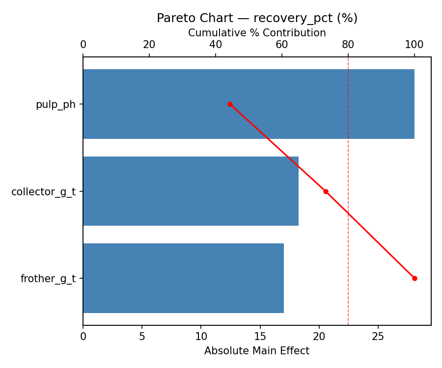
Main Effects Plot
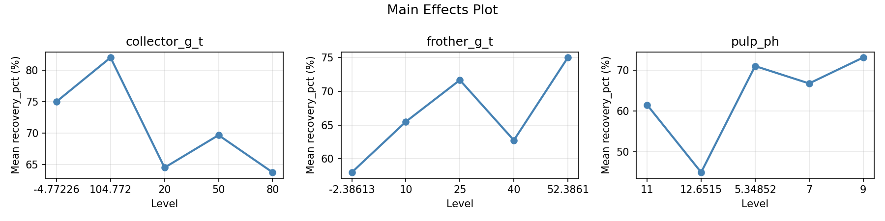
Normal Probability Plot of Effects
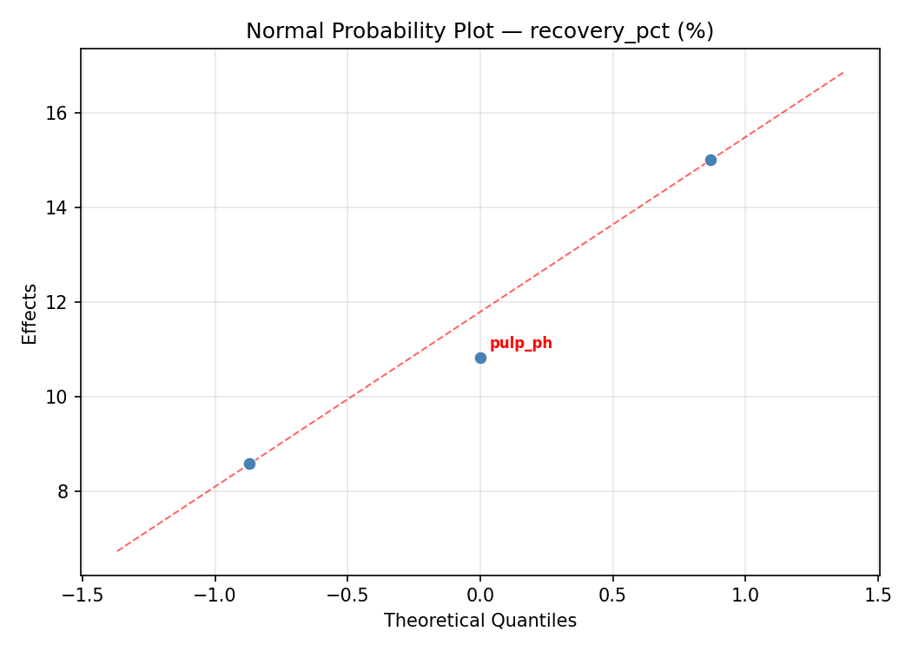
Half-Normal Plot of Effects
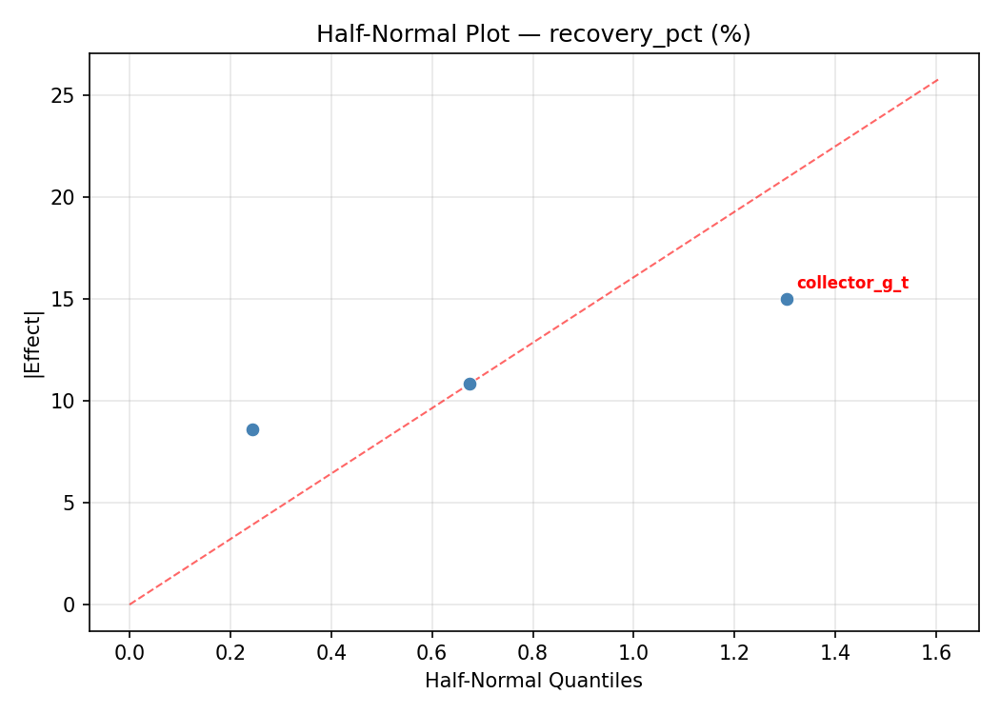
Model Diagnostics
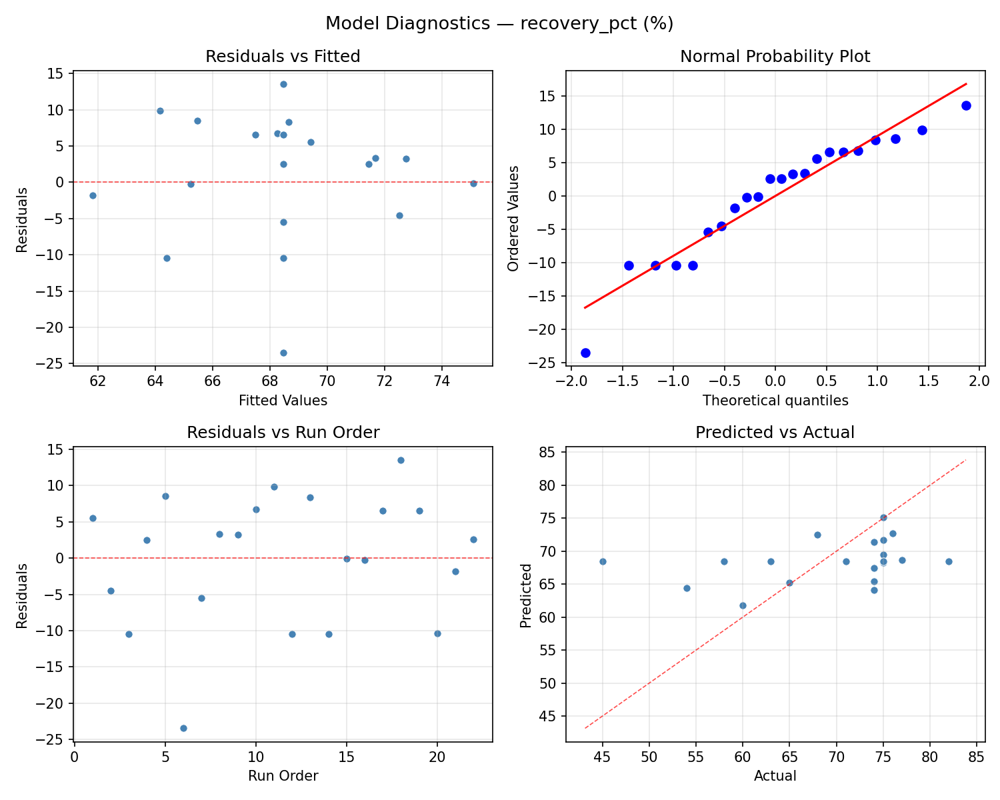
Response: grade_pct
Top factors: pulp_ph (43.9%), collector_g_t (30.6%), frother_g_t (25.5%).
ANOVA
| Source | DF | SS | MS | F | p-value |
|---|
| Source | DF | SS | MS | F | p-value |
| collector_g_t | 4 | 100.4211 | 25.1053 | 2.050 | 0.1706 |
| frother_g_t | 4 | 77.8236 | 19.4559 | 1.588 | 0.2587 |
| pulp_ph | 4 | 85.3336 | 21.3334 | 1.742 | 0.2246 |
| Lack | of | Fit | 2 | 0.0000 | 0.0000 |
| Pure | Error | 7 | 85.7388 | | |
| Error | 9 | 85.4295 | 12.2484 | | |
| Total | 21 | 349.0077 | 16.6194 | | |
Pareto Chart
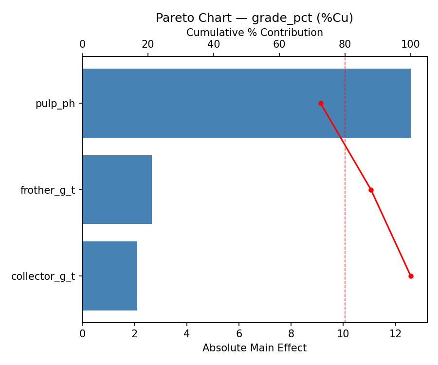
Main Effects Plot
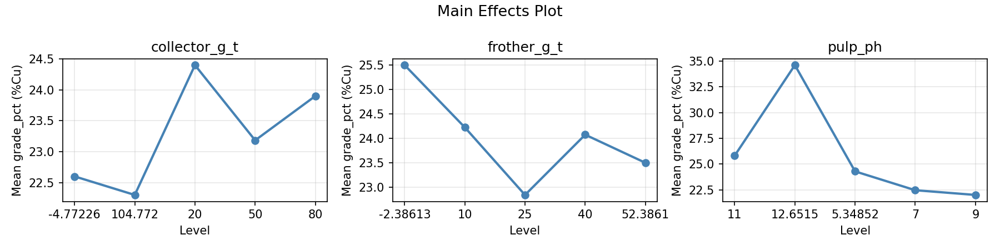
Normal Probability Plot of Effects
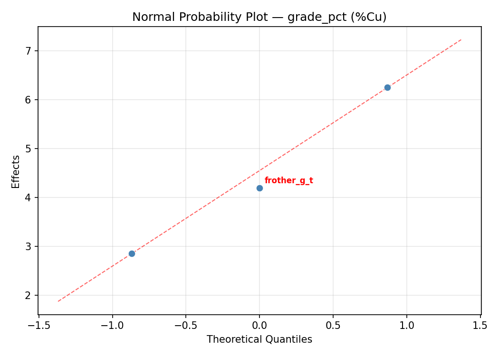
Half-Normal Plot of Effects
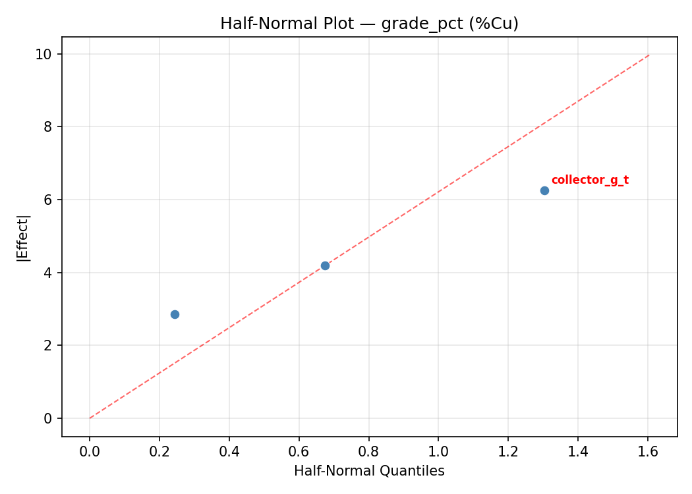
Model Diagnostics
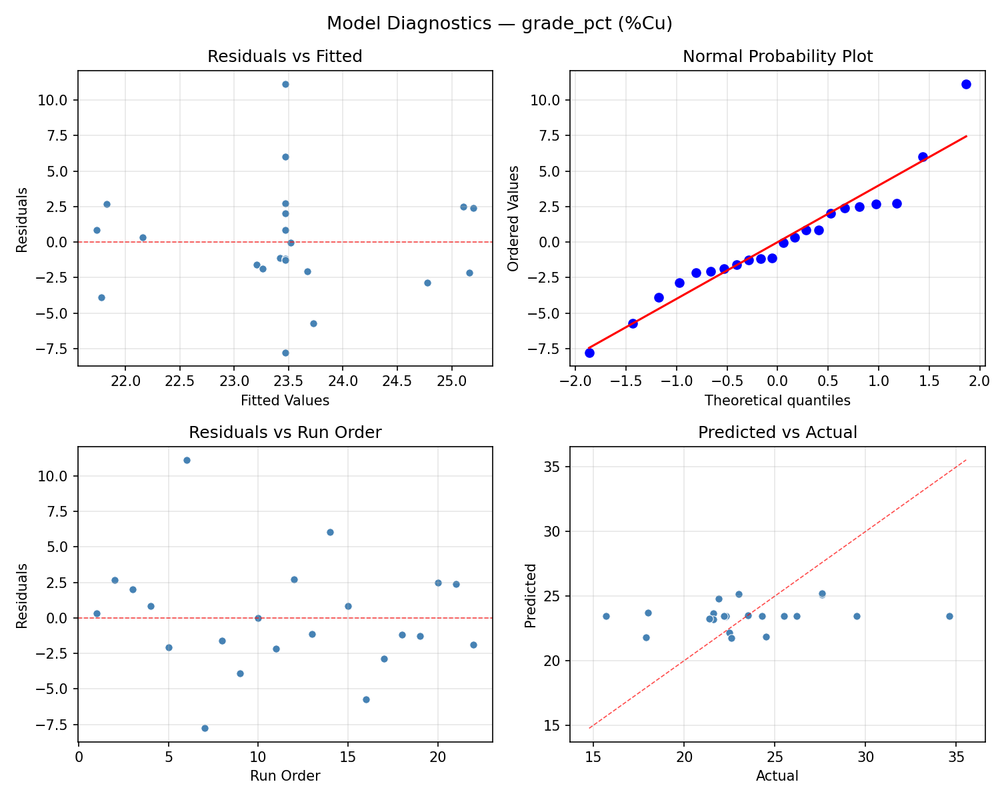
Response Surface Plots
3D surfaces fitted with quadratic RSM. Red dots are observed data points.
grade pct collector g t vs frother g t
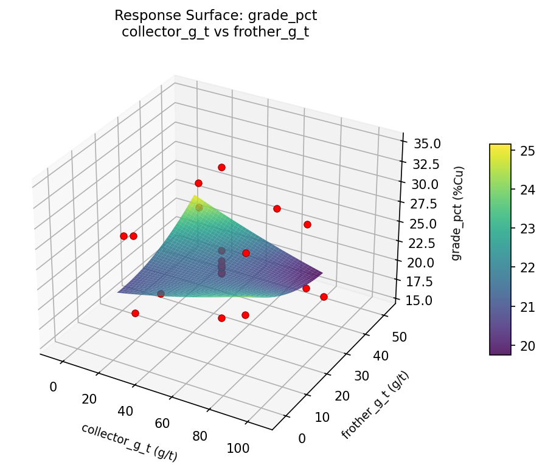
grade pct collector g t vs pulp ph
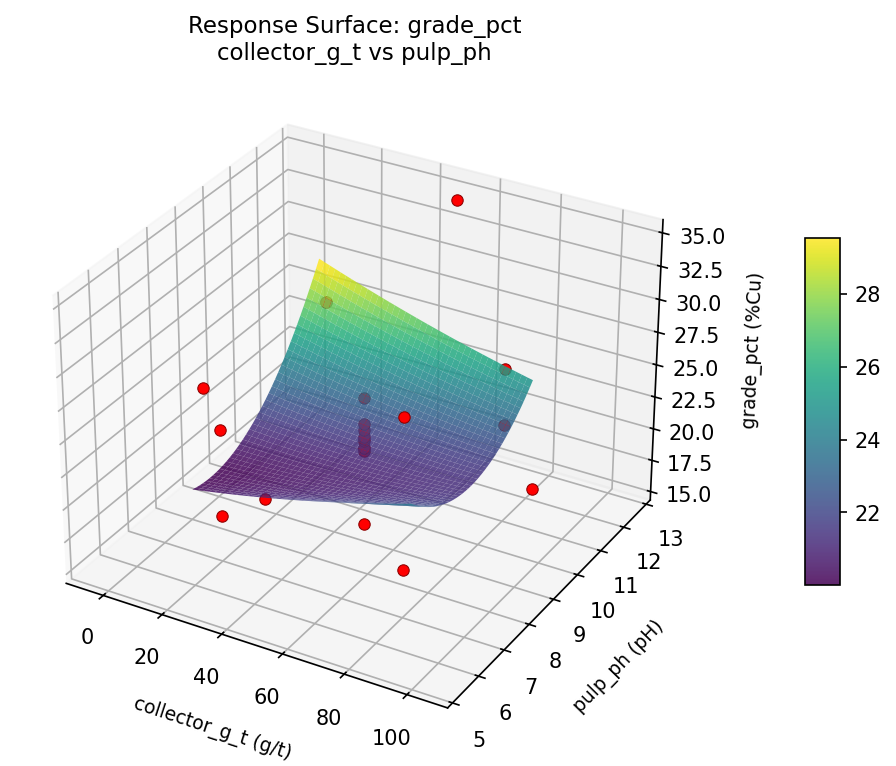
grade pct frother g t vs pulp ph
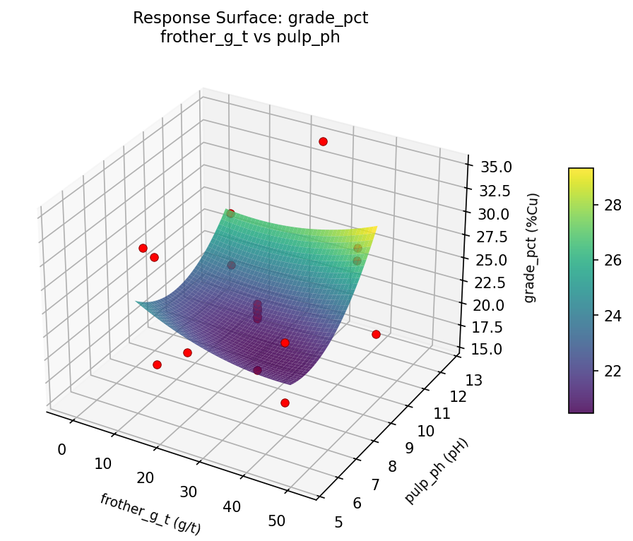
recovery pct collector g t vs frother g t
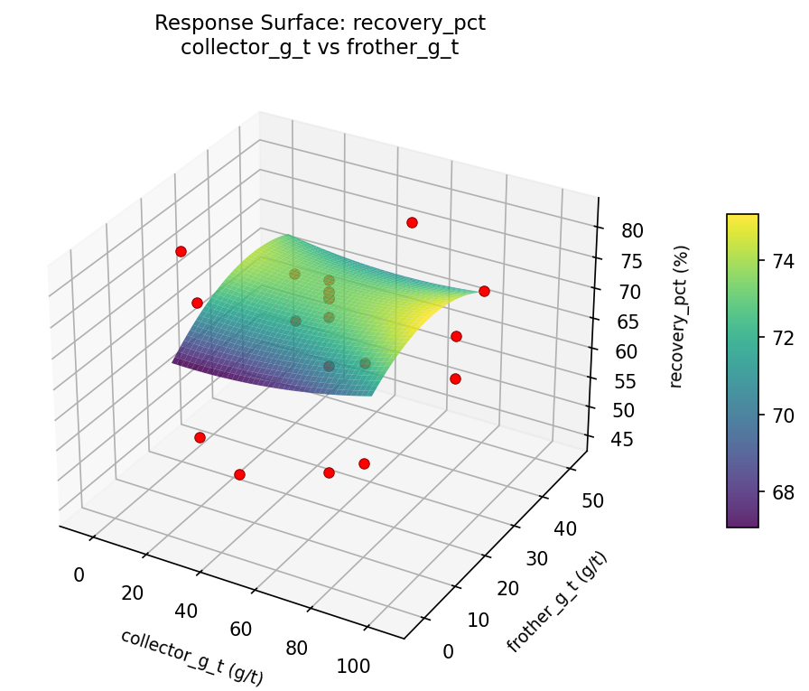
recovery pct collector g t vs pulp ph
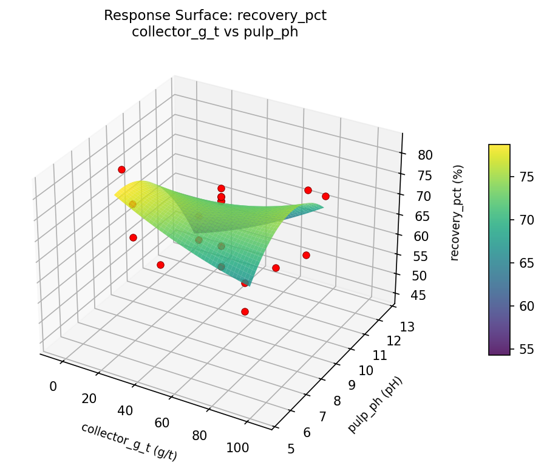
recovery pct frother g t vs pulp ph
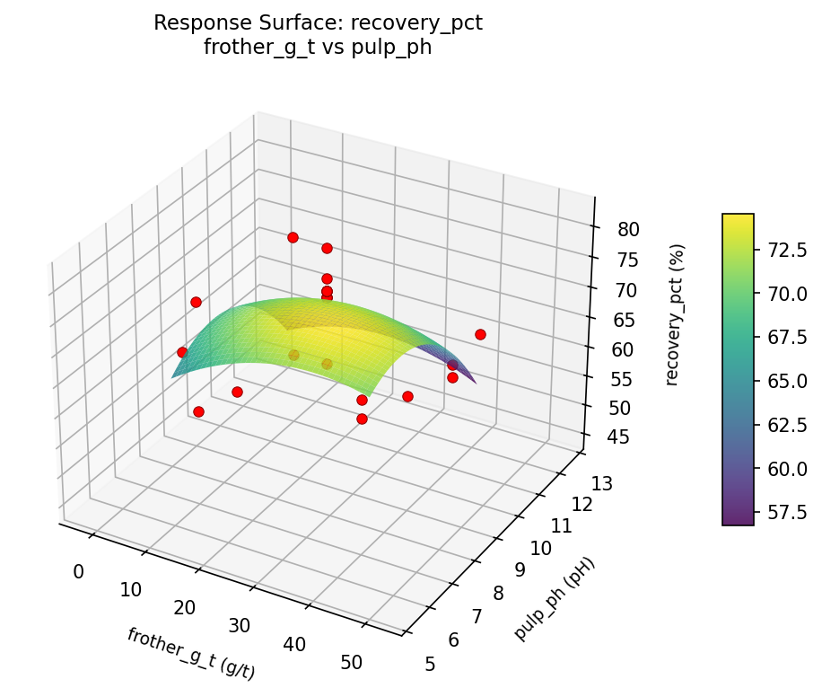
Multi-Objective Optimization
When responses compete, Derringer–Suich desirability finds the best compromise.
Each response is scaled to a 0–1 desirability, then combined via a weighted geometric mean.
Overall Desirability
D = 0.5451
Per-Response Desirability
| Response | Weight | Desirability | Predicted | Dir |
|---|
recovery_pct |
1.0 |
|
67.93 0.6089 67.93 % |
↑ |
grade_pct |
1.5 |
|
25.28 0.5063 25.28 %Cu |
↑ |
Recommended Settings
| Factor | Value |
|---|
collector_g_t | 80 g/t |
frother_g_t | 10 g/t |
pulp_ph | 11 pH |
Source: from RSM model prediction
Trade-off Summary
Sacrifice = how much worse than single-objective best.
| Response | Predicted | Best Observed | Sacrifice |
|---|
grade_pct | 25.28 | 34.60 | +9.32 |
Top 3 Runs by Desirability
| Run | D | Factor Settings |
|---|
| #10 | 0.5392 | collector_g_t=50, frother_g_t=25, pulp_ph=12.6515 |
| #4 | 0.5386 | collector_g_t=50, frother_g_t=25, pulp_ph=9 |
Model Quality
| Response | R² | Type |
|---|
grade_pct | 0.0800 | linear |
Full Multi-Objective Output
============================================================
MULTI-OBJECTIVE OPTIMIZATION
Method: Derringer-Suich Desirability Function
============================================================
Overall desirability: D = 0.5451
Response Weight Desirability Predicted Direction
---------------------------------------------------------------------
recovery_pct 1.0 0.6089 67.93 % ↑
grade_pct 1.5 0.5063 25.28 %Cu ↑
Recommended settings:
collector_g_t = 80 g/t
frother_g_t = 10 g/t
pulp_ph = 11 pH
(from RSM model prediction)
Trade-off summary:
recovery_pct: 67.93 (best observed: 82.00, sacrifice: +14.07)
grade_pct: 25.28 (best observed: 34.60, sacrifice: +9.32)
Model quality:
recovery_pct: R² = 0.0753 (linear)
grade_pct: R² = 0.0800 (linear)
Top 3 observed runs by overall desirability:
1. Run #14 (D=0.5437): collector_g_t=50, frother_g_t=-2.38613, pulp_ph=9
2. Run #10 (D=0.5392): collector_g_t=50, frother_g_t=25, pulp_ph=12.6515
3. Run #4 (D=0.5386): collector_g_t=50, frother_g_t=25, pulp_ph=9
Full Analysis Output
=== Main Effects: recovery_pct ===
Factor Effect Std Error % Contribution
--------------------------------------------------------------
collector_g_t 17.2500 2.0051 43.1%
pulp_ph 11.5000 2.0051 28.7%
frother_g_t 11.2500 2.0051 28.1%
=== ANOVA Table: recovery_pct ===
Source DF SS MS F p-value
-----------------------------------------------------------------------------
collector_g_t 4 422.4545 105.6136 1.823 0.2086
frother_g_t 4 189.0379 47.2595 0.816 0.5461
pulp_ph 4 186.7879 46.6970 0.806 0.5513
Lack of Fit 2 653.6742 326.8371 5.642 0.0347
Pure Error 7 405.5000 57.9286
Error 9 1059.1742 57.9286
Total 21 1857.4545 88.4502
=== Summary Statistics: recovery_pct ===
collector_g_t:
Level N Mean Std Min Max
------------------------------------------------------------
-4.77226 1 58.0000 0.0000 58.0000 58.0000
104.772 1 54.0000 0.0000 54.0000 54.0000
20 4 67.0000 9.2736 58.0000 75.0000
50 12 71.2500 6.6212 58.0000 82.0000
80 4 67.7500 15.2179 45.0000 77.0000
frother_g_t:
Level N Mean Std Min Max
------------------------------------------------------------
-2.38613 1 74.0000 0.0000 74.0000 74.0000
10 4 63.7500 15.1300 45.0000 77.0000
25 12 68.1667 8.6322 54.0000 82.0000
40 4 71.0000 7.3485 60.0000 75.0000
52.3861 1 75.0000 0.0000 75.0000 75.0000
pulp_ph:
Level N Mean Std Min Max
------------------------------------------------------------
11 4 71.2500 8.8835 58.0000 77.0000
12.6515 1 75.0000 0.0000 75.0000 75.0000
5.34852 1 65.0000 0.0000 65.0000 65.0000
7 4 63.5000 14.1067 45.0000 75.0000
9 12 68.9167 8.7226 54.0000 82.0000
=== Main Effects: grade_pct ===
Factor Effect Std Error % Contribution
--------------------------------------------------------------
pulp_ph 8.6500 0.8692 43.9%
collector_g_t 6.0417 0.8692 30.6%
frother_g_t 5.0250 0.8692 25.5%
=== ANOVA Table: grade_pct ===
Source DF SS MS F p-value
-----------------------------------------------------------------------------
collector_g_t 4 100.4211 25.1053 2.050 0.1706
frother_g_t 4 77.8236 19.4559 1.588 0.2587
pulp_ph 4 85.3336 21.3334 1.742 0.2246
Lack of Fit 2 0.0000 0.0000 0.000 1.0000
Pure Error 7 85.7388 12.2484
Error 9 85.4295 12.2484
Total 21 349.0077 16.6194
=== Summary Statistics: grade_pct ===
collector_g_t:
Level N Mean Std Min Max
------------------------------------------------------------
-4.77226 1 25.5000 0.0000 25.5000 25.5000
104.772 1 27.6000 0.0000 27.6000 27.6000
20 4 25.7750 3.3220 22.5000 29.5000
50 12 21.5583 3.0324 15.7000 26.2000
80 4 25.3500 6.1733 21.9000 34.6000
frother_g_t:
Level N Mean Std Min Max
------------------------------------------------------------
-2.38613 1 23.0000 0.0000 23.0000 23.0000
10 4 27.2250 5.9483 22.3000 34.6000
25 12 22.2167 3.6369 15.7000 27.6000
40 4 23.9000 2.5521 21.9000 27.6000
52.3861 1 22.2000 0.0000 22.2000 22.2000
pulp_ph:
Level N Mean Std Min Max
------------------------------------------------------------
11 4 24.4750 3.3886 22.3000 29.5000
12.6515 1 21.6000 0.0000 21.6000 21.6000
5.34852 1 18.0000 0.0000 18.0000 18.0000
7 4 26.6500 5.8847 21.9000 34.6000
9 12 22.6833 3.3755 15.7000 27.6000
Optimization Recommendations
=== Optimization: recovery_pct ===
Direction: maximize
Best observed run: #18
collector_g_t = 20
frother_g_t = 40
pulp_ph = 7
Value: 82.0
RSM Model (linear, R² = 0.3712, Adj R² = 0.2664):
Coefficients:
intercept +68.4545
collector_g_t +4.9618
frother_g_t +4.7252
pulp_ph -0.2433
RSM Model (quadratic, R² = 0.5281, Adj R² = 0.1742):
Coefficients:
intercept +68.4545
collector_g_t +4.9617
frother_g_t +4.7252
pulp_ph -0.2433
collector_g_t*frother_g_t -3.2500
collector_g_t*pulp_ph -1.5000
frother_g_t*pulp_ph +1.0000
collector_g_t^2 -2.2500
frother_g_t^2 +1.6500
pulp_ph^2 +0.6000
Curvature analysis:
collector_g_t coef=-2.2500 concave (has a maximum)
frother_g_t coef=+1.6500 convex (has a minimum)
pulp_ph coef=+0.6000 convex (has a minimum)
Notable interactions:
collector_g_t*frother_g_t coef=-3.2500 (antagonistic)
collector_g_t*pulp_ph coef=-1.5000 (antagonistic)
frother_g_t*pulp_ph coef=+1.0000 (synergistic)
Predicted optimum (from linear model, at observed points):
collector_g_t = 80
frother_g_t = 40
pulp_ph = 7
Predicted value: 78.3848
Surface optimum (via L-BFGS-B, linear model):
collector_g_t = 80
frother_g_t = 40
pulp_ph = 7
Predicted value: 78.3848
Model quality: Weak fit — consider adding center points or using a different design.
Factor importance:
1. collector_g_t (effect: 30.0, contribution: 55.0%)
2. frother_g_t (effect: 15.5, contribution: 28.4%)
3. pulp_ph (effect: 9.0, contribution: 16.5%)
=== Optimization: grade_pct ===
Direction: maximize
Best observed run: #6
collector_g_t = -4.77226
frother_g_t = 25
pulp_ph = 9
Value: 34.6
RSM Model (linear, R² = 0.2355, Adj R² = 0.1081):
Coefficients:
intercept +23.4682
collector_g_t -1.8961
frother_g_t -0.9127
pulp_ph +1.0846
RSM Model (quadratic, R² = 0.5949, Adj R² = 0.2911):
Coefficients:
intercept +22.5879
collector_g_t -1.8961
frother_g_t -0.9127
pulp_ph +1.0846
collector_g_t*frother_g_t +0.8625
collector_g_t*pulp_ph +1.3875
frother_g_t*pulp_ph -1.3375
collector_g_t^2 +1.8501
frother_g_t^2 +0.2901
pulp_ph^2 -0.8199
Curvature analysis:
collector_g_t coef=+1.8501 convex (has a minimum)
pulp_ph coef=-0.8199 concave (has a maximum)
frother_g_t coef=+0.2901 convex (has a minimum)
Notable interactions:
collector_g_t*pulp_ph coef=+1.3875 (synergistic)
frother_g_t*pulp_ph coef=-1.3375 (antagonistic)
collector_g_t*frother_g_t coef=+0.8625 (synergistic)
Predicted optimum (from quadratic model, at observed points):
collector_g_t = -4.77226
frother_g_t = 25
pulp_ph = 9
Predicted value: 32.2168
Surface optimum (via L-BFGS-B, quadratic model):
collector_g_t = 20
frother_g_t = 10
pulp_ph = 10.2619
Predicted value: 28.7258
Model quality: Moderate fit — use predictions directionally, not precisely.
Factor importance:
1. collector_g_t (effect: 12.4, contribution: 55.2%)
2. pulp_ph (effect: 7.2, contribution: 32.3%)
3. frother_g_t (effect: 2.8, contribution: 12.5%)